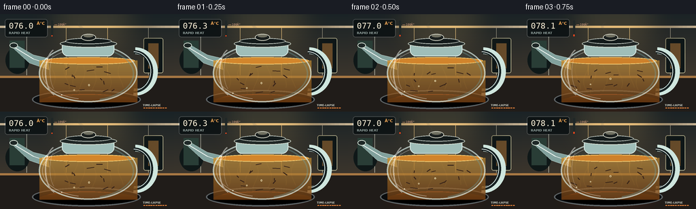
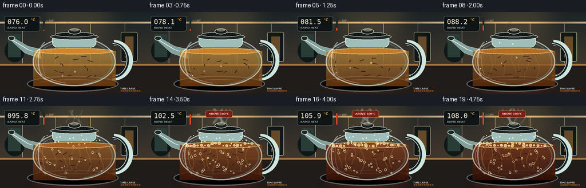

CODING AGENTS AS PIXEL WORLD MODELS
traex/GPT-5.6-Sol · phygen_109
点击播放 · 原生 RGB 像素
逐轮保存的候选
回放视频、检查图与代码变化。
每份候选均可单独播放。实际图片检查记录在下方工具轨迹中。
候选 01播放与检查图
点击播放 · 原生 RGB 像素


展开代码变化
--- 上一保存版本
+++ 本次保存版本
@@ -0,0 +1,219 @@
+from pathlib import Path
+import math
+import numpy as np
+from PIL import Image, ImageDraw, ImageFont, ImageFilter
+import artifact_io
+
+W,H,N,S = 256,144,20,4
+SS=3
+WW,HH=W*SS,H*SS
+font_regular='/usr/share/fonts/truetype/dejavu/DejaVuSans.ttf'
+font_bold='/usr/share/fonts/truetype/dejavu/DejaVuSans-Bold.ttf'
+font_mono='/usr/share/fonts/truetype/dejavu/DejaVuSansMono.ttf'
+
+def sc(v): return int(round(v*SS))
+def box(b): return tuple(sc(x) for x in b)
+def pts(p): return [(sc(x),sc(y)) for x,y in p]
+def font(path,size): return ImageFont.truetype(path,sc(size))
+
+def smooth(x):
+ x=max(0,min(1,x)); return x*x*(3-2*x)
+
+def curve(draw, points, fill, width):
+ draw.line(pts(points), fill=fill, width=sc(width), joint='curve')
+
+def frame(i):
+ t=i/(N-1)
+ # warm, shallow-depth kitchen background
+ yy=np.linspace(0,1,HH)[:,None,None]
+ top=np.array([26,35,38])[None,None,:]
+ bot=np.array([77,63,48])[None,None,:]
+ arr=np.tile((top*(1-yy)+bot*yy),(1,WW,1))
+ # subtle warming as burner intensifies
+ arr += np.array([9*t,3*t,0])[None,None,:]
+ im=Image.fromarray(np.uint8(np.clip(arr,0,255)),'RGB').convert('RGBA')
+ d=ImageDraw.Draw(im,'RGBA')
+ # blurred kitchen backdrop
+ d.rectangle(box((0,17,256,20)), fill=(195,176,145,25))
+ d.rectangle(box((0,91,256,144)), fill=(32,28,25,255))
+ d.rectangle(box((0,91,256,94)), fill=(167,119,67,100))
+ # tiles and distant objects
+ for x in (39,97,158,218): d.line(pts([(x,20),(x,90)]), fill=(220,220,201,12), width=sc(.5))
+ d.rounded_rectangle(box((211,35,240,87)),radius=sc(3),fill=(14,22,23,120),outline=(183,178,143,25),width=sc(1))
+ d.rectangle(box((218,43,233,80)),fill=(104,76,42,80))
+ d.ellipse(box((8,48,43,88)),fill=(15,24,24,90)); d.rectangle(box((14,39,36,79)),fill=(41,61,54,120))
+ # overhead warm bloom
+ glow=Image.new('RGBA',(WW,HH),(0,0,0,0)); gd=ImageDraw.Draw(glow,'RGBA')
+ gd.ellipse(box((66,-35,207,76)),fill=(255,198,105,32))
+ glow=glow.filter(ImageFilter.GaussianBlur(sc(22))); im=Image.alpha_composite(im,glow); d=ImageDraw.Draw(im,'RGBA')
+
+ # induction hot plate and red heat glow
+ heat=Image.new('RGBA',(WW,HH),(0,0,0,0)); hd=ImageDraw.Draw(heat,'RGBA')
+ hd.ellipse(box((50,113,205,142)),fill=(255,73,14,int(28+75*t)))
+ heat=heat.filter(ImageFilter.GaussianBlur(sc(9))); im=Image.alpha_composite(im,heat); d=ImageDraw.Draw(im,'RGBA')
+ d.ellipse(box((47,112,207,140)),fill=(10,12,14,255),outline=(94,100,102,180),width=sc(2))
+ d.ellipse(box((64,118,191,135)),outline=(255,65,22,int(80+150*t)),width=sc(2))
+ d.arc(box((72,121,183,134)),185,355,fill=(255,180,80,int(100+130*t)),width=sc(1))
+
+ # shadow under pot
+ d.ellipse(box((58,119,202,137)),fill=(0,0,0,150))
+
+ # handle behind body: broad translucent glass loop
+ d.arc(box((166,49,232,120)),270,95,fill=(207,230,222,100),width=sc(10))
+ d.arc(box((169,53,225,116)),270,92,fill=(22,33,34,210),width=sc(5))
+ d.arc(box((171,55,222,113)),270,90,fill=(240,255,249,75),width=sc(1))
+
+ # spout behind body, broad triangular glass
+ spout=pts([(70,65),(49,60),(20,43),(17,48),(43,72),(72,82)])
+ d.polygon(spout,fill=(130,161,157,45),outline=(217,235,228,125))
+ d.line(pts([(18,47),(49,66),(70,73)]),fill=(248,255,247,125),width=sc(1))
+ d.ellipse(box((14,42,26,50)),fill=(30,40,39,180),outline=(227,238,226,120),width=sc(1))
+
+ # main glass body silhouette and tea mask
+ body_mask=Image.new('L',(WW,HH),0); md=ImageDraw.Draw(body_mask)
+ md.ellipse(box((57,44,202,130)),fill=255)
+ # flatten neck region slightly using ellipse body, then liquid only below 68
+ liquid_mask=Image.new('L',(WW,HH),0)
+ lm=ImageDraw.Draw(liquid_mask)
+ lm.ellipse(box((61,48,198,127)),fill=255)
+ lm.rectangle(box((58,68,202,130)),fill=255)
+ lm.rectangle(box((0,0,256,68)),fill=0)
+ # tea darkens / reddens over timelapse
+ brew=smooth(t)
+ ctop=np.array([206,151,55])*(1-brew)+np.array([110,42,14])*brew
+ cbot=np.array([125,67,20])*(1-brew)+np.array([51,16,8])*brew
+ tea=np.zeros((HH,WW,4),dtype=np.uint8)
+ for y in range(sc(65),sc(131)):
+ q=(y/sc(1)-65)/66
+ col=ctop*(1-q)+cbot*q
+ tea[y,:,0:3]=np.clip(col,0,255)
+ tea[y,:,3]=int(170+55*brew)
+ tea_im=Image.fromarray(tea,'RGBA'); tea_im.putalpha(Image.composite(tea_im.getchannel('A'),Image.new('L',(WW,HH),0),liquid_mask))
+ im=Image.alpha_composite(im,tea_im); d=ImageDraw.Draw(im,'RGBA')
+
+ # moving convection bands inside tea
+ conv=Image.new('RGBA',(WW,HH),(0,0,0,0)); cd=ImageDraw.Draw(conv,'RGBA')
+ intensity=smooth((t-.18)/.55)
+ for k in range(7):
+ phase=t*9 + k*1.37
+ x=77+k*16+5*math.sin(phase)
+ y0=113-5*math.cos(phase*.8)
+ path=[]
+ for j in range(18):
+ q=j/17
+ y=y0-q*43
+ xx=x+4*math.sin(q*5+phase)
+ path.append((xx,y))
+ curve(cd,path,(255,177,62,int(12+38*intensity)),1.2)
+ conv.putalpha(Image.composite(conv.getchannel('A'),Image.new('L',(WW,HH),0),liquid_mask))
+ im=Image.alpha_composite(im,conv); d=ImageDraw.Draw(im,'RGBA')
+
+ # tea surface and dark infusion ribbon
+ d.ellipse(box((62,63.5,198,74)),fill=(213-int(85*brew),129-int(75*brew),33-int(18*brew),205),outline=(255,208,109,110),width=sc(1))
+ # swirling loose tea leaves
+ for k in range(13):
+ ang=k*2.39+t*(7.5+0.16*k)
+ rad=16+((k*11)%42)
+ x=130+rad*math.cos(ang)*1.17
+ y=96+rad*.42*math.sin(ang)+3*math.sin(t*9+k)
+ # keep in body
+ if ((x-130)/67)**2+((y-88)/39)**2<.88:
+ length=3.5+(k%3)
+ dx=length*math.cos(ang+1.2); dy=length*.45*math.sin(ang+1.2)
+ d.line(pts([(x-dx,y-dy),(x+dx,y+dy)]),fill=(43,18,7,150+int(80*brew)),width=sc(1.4))
+
+ # bubbles, strongly increasing after 92C; deterministic rising paths
+ temp=76+32*smooth(t)
+ vig=smooth((temp-88)/14)
+ bubble_count=int(3+36*vig)
+ for k in range(bubble_count):
+ # periodic rising trajectory, spread across curved base
+ x=75+((k*29)%108)+5*math.sin(k*1.8+t*13)
+ cycle=(t*(0.9+0.12*(k%5))+k*.137)%1
+ y=119-cycle*52
+ # constrain near ellipse at height
+ half=64*math.sqrt(max(.05,1-((y-87)/42)**2))
+ x=max(130-half+2,min(130+half-2,x))
+ r=.7+(k%5)*.28+vig*.35
+ alpha=int(80+130*vig)
+ d.ellipse(box((x-r,y-r,x+r,y+r)),outline=(255,234,184,alpha),width=max(1,sc(.55)))
+ if r>1.2: d.point((sc(x-.3),sc(y-.4)),fill=(255,255,239,180))
+ # rolling boil foam at surface after crossing 100
+ boil=smooth((temp-98)/6)
+ for k in range(int(24*boil)):
+ x=70+((k*19)%120)
+ y=68+2.6*math.sin(k*2.1+t*15)
+ r=1.1+(k%4)*.55
+ d.ellipse(box((x-r,y-r,x+r,y+r)),fill=(231,178,91,int(80+100*boil)),outline=(255,240,196,185),width=sc(.5))
+
+ # glass body overlay outlines/reflections
+ glass=Image.new('RGBA',(WW,HH),(0,0,0,0)); gg=ImageDraw.Draw(glass,'RGBA')
+ gg.ellipse(box((57,44,202,130)),fill=(175,211,208,13),outline=(222,242,237,170),width=sc(2))
+ gg.arc(box((62,49,197,126)),102,255,fill=(255,255,247,95),width=sc(1))
+ gg.arc(box((62,48,197,128)),286,75,fill=(117,163,162,100),width=sc(2))
+ # vertical specular highlights
+ gg.arc(box((66,50,102,121)),105,250,fill=(255,255,249,120),width=sc(2))
+ gg.arc(box((73,56,94,113)),115,238,fill=(255,255,255,60),width=sc(1))
+ gg.ellipse(box((91,51,101,57)),fill=(255,255,255,105))
+ im=Image.alpha_composite(im,glass); d=ImageDraw.Draw(im,'RGBA')
+
+ # neck and lid
+ d.rounded_rectangle(box((91,39,168,62)),radius=sc(9),fill=(160,190,185,35),outline=(225,241,235,150),width=sc(1))
+ d.ellipse(box((88,38,172,49)),fill=(33,40,39,230),outline=(218,226,213,150),width=sc(1))
+ d.ellipse(box((96,35,164,44)),fill=(20,27,27,245),outline=(197,205,197,120),width=sc(1))
+ d.ellipse(box((119,29,141,39)),fill=(26,31,30,250),outline=(220,220,204,140),width=sc(1))
+ d.ellipse(box((123,30,137,34)),fill=(111,111,96,100))
+
+ # condensation on upper inner glass grows
+ cond=smooth((temp-84)/14)
+ for k in range(int(18*cond)):
+ x=82+((k*23)%95); y=52+((k*17)%15)
+ r=.55+(k%3)*.3
+ d.ellipse(box((x-r,y-r,x+r,y+r)),fill=(238,249,240,90),outline=(255,255,255,120))
+
+ # steam: multiple soft wisps, visibly stronger through time
+ steam=smooth((temp-86)/16)
+ smoke=Image.new('RGBA',(WW,HH),(0,0,0,0)); sd=ImageDraw.Draw(smoke,'RGBA')
+ strands=1+int(6*steam)
+ for k in range(strands):
+ phase=k*1.71+t*7.0
+ x0=119+(k%4)*8
+ y0=31
+ path=[]
+ for j in range(25):
+ q=j/24
+ y=y0-q*(20+7*steam)
+ x=x0+4*math.sin(q*5.2+phase)+q*7*math.sin(phase*.61)
+ path.append((x,y))
+ curve(sd,path,(242,248,239,int(25+75*steam)),1.2+1.2*steam)
+ smoke=smoke.filter(ImageFilter.GaussianBlur(sc(1.0)))
+ im=Image.alpha_composite(im,smoke); d=ImageDraw.Draw(im,'RGBA')
+
+ # clean infographic temperature readout in top-left
+ panel=Image.new('RGBA',(WW,HH),(0,0,0,0)); pd=ImageDraw.Draw(panel,'RGBA')
+ pd.rounded_rectangle(box((7,7,70,34)),radius=sc(4),fill=(9,15,16,205),outline=(255,255,255,45),width=sc(1))
+ pd.text((sc(13),sc(10)),f'{temp:05.1f}',font=font(font_mono,12),fill=(255,245,220,255))
+ pd.text((sc(54),sc(10)), '°C',font=font(font_bold,6),fill=(255,176,90,255))
+ pd.text((sc(13),sc(25)), 'RAPID HEAT',font=font(font_bold,4.5),fill=(174,192,187,220))
+ # thermometer strip, crosses marked 100
+ pd.rounded_rectangle(box((75,9,78,33)),radius=sc(1.5),fill=(31,39,39,230))
+ filltop=31-(temp-76)/(108-76)*20
+ pd.rounded_rectangle(box((75.5,filltop,77.5,32.5)),radius=sc(1),fill=(255,72,28,255))
+ pd.line(pts([(80,15.2),(84,15.2)]),fill=(255,173,115,180),width=sc(.7))
+ pd.text((sc(85),sc(12.2)),'100°',font=font(font_mono,4.2),fill=(255,188,150,220))
+ if temp>=100:
+ pd.rounded_rectangle(box((103,8,150,20)),radius=sc(3),fill=(128,27,13,210),outline=(255,128,77,180),width=sc(.7))
+ pd.text((sc(109),sc(11)),'ABOVE 100°C',font=font(font_bold,4.5),fill=(255,231,211,255))
+ im=Image.alpha_composite(im,panel)
+
+ # letterbox-like tiny timelapse progress ticks bottom right
+ d=ImageDraw.Draw(im,'RGBA')
+ d.text((sc(210),sc(132)),'TIME-LAPSE',font=font(font_bold,4),fill=(210,215,204,150))
+ for q in range(10):
+ d.rectangle(box((211+q*3.5,138,213.5+q*3.5,139)),fill=(235,133,59,220 if q/9<=t else 55))
+
+ return np.array(im.convert('RGB').resize((W,H),Image.Resampling.LANCZOS),dtype=np.uint8)
+
+frames=np.stack([frame(i) for i in range(N)])
+artifact_io.save(frames,Path(__file__).resolve().parent)
+print('saved',frames.shape,frames.dtype)
候选 02播放与检查图
点击播放 · 原生 RGB 像素

展开代码变化
--- 上一保存版本
+++ 本次保存版本
@@ -193,17 +193,17 @@
panel=Image.new('RGBA',(WW,HH),(0,0,0,0)); pd=ImageDraw.Draw(panel,'RGBA')
pd.rounded_rectangle(box((7,7,70,34)),radius=sc(4),fill=(9,15,16,205),outline=(255,255,255,45),width=sc(1))
pd.text((sc(13),sc(10)),f'{temp:05.1f}',font=font(font_mono,12),fill=(255,245,220,255))
- pd.text((sc(54),sc(10)), '°C',font=font(font_bold,6),fill=(255,176,90,255))
+ pd.text((sc(54),sc(10)), '\u00b0C',font=font(font_bold,6),fill=(255,176,90,255))
pd.text((sc(13),sc(25)), 'RAPID HEAT',font=font(font_bold,4.5),fill=(174,192,187,220))
# thermometer strip, crosses marked 100
pd.rounded_rectangle(box((75,9,78,33)),radius=sc(1.5),fill=(31,39,39,230))
filltop=31-(temp-76)/(108-76)*20
pd.rounded_rectangle(box((75.5,filltop,77.5,32.5)),radius=sc(1),fill=(255,72,28,255))
pd.line(pts([(80,15.2),(84,15.2)]),fill=(255,173,115,180),width=sc(.7))
- pd.text((sc(85),sc(12.2)),'100°',font=font(font_mono,4.2),fill=(255,188,150,220))
+ pd.text((sc(85),sc(12.2)),'100\u00b0',font=font(font_mono,4.2),fill=(255,188,150,220))
if temp>=100:
pd.rounded_rectangle(box((103,8,150,20)),radius=sc(3),fill=(128,27,13,210),outline=(255,128,77,180),width=sc(.7))
- pd.text((sc(109),sc(11)),'ABOVE 100°C',font=font(font_bold,4.5),fill=(255,231,211,255))
+ pd.text((sc(109),sc(11)),'ABOVE 100\u00b0C',font=font(font_bold,4.5),fill=(255,231,211,255))
im=Image.alpha_composite(im,panel)
# letterbox-like tiny timelapse progress ticks bottom right
可观测工具轨迹
实际执行的命令与返回图片。
命令 1exit 0
/bin/bash -lc "cat prompt.txt && printf '\\n---RULES---\\n' && cat GENERATION_RULES.md && printf '\\n---SPEC---\\n' && cat task_spec.json"
命令 2exit 1
/bin/bash -lc "find . -maxdepth 2 -type f -printf '%p\\n' | sort && printf '\\n---TOOLS---\\n' && command -v ffmpeg; command -v python3; command -v blender; command -v convert"
命令 3exit 0
/bin/bash -lc 'cat artifact_io.py'
命令 4exit 0
/bin/bash -lc 'fc-list 2>/dev/null | head -10 || true'
命令 5exit 0
/bin/bash -lc "cat > generate.py <<'PY'
from pathlib import Path
import math
import numpy as np
from PIL import Image, ImageDraw, ImageFont, ImageFilter
import artifact_io
W,H,N,S = 256,144,20,4
SS=3
WW,HH=W*SS,H*SS
font_regular='/usr/share/fonts/truetype/dejavu/DejaVuSans.ttf'
font_bold='/usr/share/fonts/truetype/dejavu/DejaVuSans-Bold.ttf'
font_mono='/usr/share/fonts/truetype/dejavu/DejaVuSansMono.ttf'
def sc(v): return int(round(v*SS))
def box(b): return tuple(sc(x) for x in b)
def pts(p): return [(sc(x),sc(y)) for x,y in p]
def font(path,size): return ImageFont.truetype(path,sc(size))
def smooth(x):
x=max(0,min(1,x)); return x*x*(3-2*x)
def curve(draw, points, fill, width):
draw.line(pts(points), fill=fill, width=sc(width), joint='curve')
def frame(i):
t=i/(N-1)
# warm, shallow-depth kitchen background
yy=np.linspace(0,1,HH)[:,None,None]
top=np.array([26,35,38])[None,None,:]
bot=np.array([77,63,48])[None,None,:]
arr=np.tile((top*(1-yy)+bot*yy),(1,WW,1))
# subtle warming as burner intensifies
arr += np.array([9*t,3*t,0])[None,None,:]
im=Image.fromarray(np.uint8(np.clip(arr,0,255)),'RGB').convert('RGBA')
d=ImageDraw.Draw(im,'RGBA')
# blurred kitchen backdrop
d.rectangle(box((0,17,256,20)), fill=(195,176,145,25))
d.rectangle(box((0,91,256,144)), fill=(32,28,25,255))
d.rectangle(box((0,91,256,94)), fill=(167,119,67,100))
# tiles and distant objects
for x in (39,97,158,218): d.line(pts([(x,20),(x,90)]), fill=(220,220,201,12), width=sc(.5))
d.rounded_rectangle(box((211,35,240,87)),radius=sc(3),fill=(14,22,23,120),outline=(183,178,143,25),width=sc(1))
d.rectangle(box((218,43,233,80)),fill=(104,76,42,80))
d.ellipse(box((8,48,43,88)),fill=(15,24,24,90)); d.rectangle(box((14,39,36,79)),fill=(41,61,54,120))
# overhead warm bloom
glow=Image.new('RGBA',(WW,HH),(0,0,0,0)); gd=ImageDraw.Draw(glow,'RGBA')
gd.ellipse(box((66,-35,207,76)),fill=(255,198,105,32))
glow=glow.filter(ImageFilter.GaussianBlur(sc(22))); im=Image.alpha_composite(im,glow); d=ImageDraw.Draw(im,'RGBA')
# induction hot plate and red heat glow
heat=Image.new('RGBA',(WW,HH),(0,0,0,0)); hd=ImageDraw.Draw(heat,'RGBA')
hd.ellipse(box((50,113,205,142)),fill=(255,73,14,int(28+75*t)))
heat=heat.filter(ImageFilter.GaussianBlur(sc(9))); im=Image.alpha_composite(im,heat); d=ImageDraw.Draw(im,'RGBA')
d.ellipse(box((47,112,207,140)),fill=(10,12,14,255),outline=(94,100,102,180),width=sc(2))
d.ellipse(box((64,118,191,135)),outline=(255,65,22,int(80+150*t)),width=sc(2))
d.arc(box((72,121,183,134)),185,355,fill=(255,180,80,int(100+130*t)),width=sc(1))
# shadow under pot
d.ellipse(box((58,119,202,137)),fill=(0,0,0,150))
# handle behind body: broad translucent glass loop
d.arc(box((166,49,232,120)),270,95,fill=(207,230,222,100),width=sc(10))
d.arc(box((169,53,225,116)),270,92,fill=(22,33,34,210),width=sc(5))
d.arc(box((171,55,222,113)),270,90,fill=(240,255,249,75),width=sc(1))
# spout behind body, broad triangular glass
spout=pts([(70,65),(49,60),(20,43),(17,48),(43,72),(72,82)])
d.polygon(spout,fill=(130,161,157,45),outline=(217,235,228,125))
d.line(pts([(18,47),(49,66),(70,73)]),fill=(248,255,247,125),width=sc(1))
d.ellipse(box((14,42,26,50)),fill=(30,40,39,180),outline=(227,238,226,120),width=sc(1))
# main glass body silhouette and tea mask
body_mask=Image.new('L',(WW,HH),0); md=ImageDraw.Draw(body_mask)
md.ellipse(box((57,44,202,130)),fill=255)
# flatten neck region slightly using ellipse body, then liquid only below 68
liquid_mask=Image.new('L',(WW,HH),0)
lm=ImageDraw.Draw(liquid_mask)
lm.ellipse(box((61,48,198,127)),fill=255)
lm.rectangle(box((58,68,202,130)),fill=255)
lm.rectangle(box((0,0,256,68)),fill=0)
# tea darkens / reddens over timelapse
brew=smooth(t)
ctop=np.array([206,151,55])*(1-brew)+np.array([110,42,14])*brew
cbot=np.array([125,67,20])*(1-brew)+np.array([51,16,8])*brew
tea=np.zeros((HH,WW,4),dtype=np.uint8)
for y in range(sc(65),sc(131)):
q=(y/sc(1)-65)/66
col=ctop*(1-q)+cbot*q
tea[y,:,0:3]=np.clip(col,0,255)
tea[y,:,3]=int(170+55*brew)
tea_im=Image.fromarray(tea,'RGBA'); tea_im.putalpha(Image.composite(tea_im.getchannel('A'),Image.new('L',(WW,HH),0),liquid_mask))
im=Image.alpha_composite(im,tea_im); d=ImageDraw.Draw(im,'RGBA')
# moving convection bands inside tea
conv=Image.new('RGBA',(WW,HH),(0,0,0,0)); cd=ImageDraw.Draw(conv,'RGBA')
intensity=smooth((t-.18)/.55)
for k in range(7):
phase=t*9 + k*1.37
x=77+k*16+5*math.sin(phase)
y0=113-5*math.cos(phase*.8)
path=[]
for j in range(18):
q=j/17
y=y0-q*43
xx=x+4*math.sin(q*5+phase)
path.append((xx,y))
curve(cd,path,(255,177,62,int(12+38*intensity)),1.2)
conv.putalpha(Image.composite(conv.getchannel('A'),Image.new('L',(WW,HH),0),liquid_mask))
im=Image.alpha_composite(im,conv); d=ImageDraw.Draw(im,'RGBA')
# tea surface and dark infusion ribbon
d.ellipse(box((62,63.5,198,74)),fill=(213-int(85*brew),129-int(75*brew),33-int(18*brew),205),outline=(255,208,109,110),width=sc(1))
# swirling loose tea leaves
for k in range(13):
ang=k*2.39+t*(7.5+0.16*k)
rad=16+((k*11)%42)
x=130+rad*math.cos(ang)*1.17
y=96+rad*.42*math.sin(ang)+3*math.sin(t*9+k)
# keep in body
if ((x-130)/67)**2+((y-88)/39)**2<.88:
length=3.5+(k%3)
dx=length*math.cos(ang+1.2); dy=length*.45*math.sin(ang+1.2)
d.line(pts([(x-dx,y-dy),(x+dx,y+dy)]),fill=(43,18,7,150+int(80*brew)),width=sc(1.4))
# bubbles, strongly increasing after 92C; deterministic rising paths
temp=76+32*smooth(t)
vig=smooth((temp-88)/14)
bubble_count=int(3+36*vig)
for k in range(bubble_count):
# periodic rising trajectory, spread across curved base
x=75+((k*29)%108)+5*math.sin(k*1.8+t*13)
cycle=(t*(0.9+0.12*(k%5))+k*.137)%1
y=119-cycle*52
# constrain near ellipse at height
half=64*math.sqrt(max(.05,1-((y-87)/42)**2))
x=max(130-half+2,min(130+half-2,x))
r=.7+(k%5)*.28+vig*.35
alpha=int(80+130*vig)
d.ellipse(box((x-r,y-r,x+r,y+r)),outline=(255,234,184,alpha),width=max(1,sc(.55)))
if r>1.2: d.point((sc(x-.3),sc(y-.4)),fill=(255,255,239,180))
# rolling boil foam at surface after crossing 100
boil=smooth((temp-98)/6)
for k in range(int(24*boil)):
x=70+((k*19)%120)
y=68+2.6*math.sin(k*2.1+t*15)
r=1.1+(k%4)*.55
d.ellipse(box((x-r,y-r,x+r,y+r)),fill=(231,178,91,int(80+100*boil)),outline=(255,240,196,185),width=sc(.5))
# glass body overlay outlines/reflections
glass=Image.new('RGBA',(WW,HH),(0,0,0,0)); gg=ImageDraw.Draw(glass,'RGBA')
gg.ellipse(box((57,44,202,130)),fill=(175,211,208,13),outline=(222,242,237,170),width=sc(2))
gg.arc(box((62,49,197,126)),102,255,fill=(255,255,247,95),width=sc(1))
gg.arc(box((62,48,197,128)),286,75,fill=(117,163,162,100),width=sc(2))
# vertical specular highlights
gg.arc(box((66,50,102,121)),105,250,fill=(255,255,249,120),width=sc(2))
gg.arc(box((73,56,94,113)),115,238,fill=(255,255,255,60),width=sc(1))
gg.ellipse(box((91,51,101,57)),fill=(255,255,255,105))
im=Image.alpha_composite(im,glass); d=ImageDraw.Draw(im,'RGBA')
# neck and lid
d.rounded_rectangle(box((91,39,168,62)),radius=sc(9),fill=(160,190,185,35),outline=(225,241,235,150),width=sc(1))
d.ellipse(box((88,38,172,49)),fill=(33,40,39,230),outline=(218,226,213,150),width=sc(1))
d.ellipse(box((96,35,164,44)),fill=(20,27,27,245),outline=(197,205,197,120),width=sc(1))
d.ellipse(box((119,29,141,39)),fill=(26,31,30,250),outline=(220,220,204,140),width=sc(1))
d.ellipse(box((123,30,137,34)),fill=(111,111,96,100))
# condensation on upper inner glass grows
cond=smooth((temp-84)/14)
for k in range(int(18*cond)):
x=82+((k*23)%95); y=52+((k*17)%15)
r=.55+(k%3)*.3
d.ellipse(box((x-r,y-r,x+r,y+r)),fill=(238,249,240,90),outline=(255,255,255,120))
# steam: multiple soft wisps, visibly stronger through time
steam=smooth((temp-86)/16)
smoke=Image.new('RGBA',(WW,HH),(0,0,0,0)); sd=ImageDraw.Draw(smoke,'RGBA')
strands=1+int(6*steam)
for k in range(strands):
phase=k*1.71+t*7.0
x0=119+(k%4)*8
y0=31
path=[]
for j in range(25):
q=j/24
y=y0-q*(20+7*steam)
x=x0+4*math.sin(q*5.2+phase)+q*7*math.sin(phase*.61)
path.append((x,y))
curve(sd,path,(242,248,239,int(25+75*steam)),1.2+1.2*steam)
smoke=smoke.filter(ImageFilter.GaussianBlur(sc(1.0)))
im=Image.alpha_composite(im,smoke); d=ImageDraw.Draw(im,'RGBA')
# clean infographic temperature readout in top-left
panel=Image.new('RGBA',(WW,HH),(0,0,0,0)); pd=ImageDraw.Draw(panel,'RGBA')
pd.rounded_rectangle(box((7,7,70,34)),radius=sc(4),fill=(9,15,16,205),outline=(255,255,255,45),width=sc(1))
pd.text((sc(13),sc(10)),f'{temp:05.1f}',font=font(font_mono,12),fill=(255,245,220,255))
pd.text((sc(54),sc(10)), '°C',font=font(font_bold,6),fill=(255,176,90,255))
pd.text((sc(13),sc(25)), 'RAPID HEAT',font=font(font_bold,4.5),fill=(174,192,187,220))
# thermometer strip, crosses marked 100
pd.rounded_rectangle(box((75,9,78,33)),radius=sc(1.5),fill=(31,39,39,230))
filltop=31-(temp-76)/(108-76)*20
pd.rounded_rectangle(box((75.5,filltop,77.5,32.5)),radius=sc(1),fill=(255,72,28,255))
pd.line(pts([(80,15.2),(84,15.2)]),fill=(255,173,115,180),width=sc(.7))
pd.text((sc(85),sc(12.2)),'100°',font=font(font_mono,4.2),fill=(255,188,150,220))
if temp>=100:
pd.rounded_rectangle(box((103,8,150,20)),radius=sc(3),fill=(128,27,13,210),outline=(255,128,77,180),width=sc(.7))
pd.text((sc(109),sc(11)),'ABOVE 100°C',font=font(font_bold,4.5),fill=(255,231,211,255))
im=Image.alpha_composite(im,panel)
# letterbox-like tiny timelapse progress ticks bottom right
d=ImageDraw.Draw(im,'RGBA')
d.text((sc(210),sc(132)),'TIME-LAPSE',font=font(font_bold,4),fill=(210,215,204,150))
for q in range(10):
d.rectangle(box((211+q*3.5,138,213.5+q*3.5,139)),fill=(235,133,59,220 if q/9<=t else 55))
return np.array(im.convert('RGB').resize((W,H),Image.Resampling.LANCZOS),dtype=np.uint8)
frames=np.stack([frame(i) for i in range(N)])
artifact_io.save(frames,Path(__file__).resolve().parent)
print('saved',frames.shape,frames.dtype)
PY
python3 generate.py"命令 6exit 0
/bin/bash -lc "python3 - <<'PY'
p='generate.py'
s=open(p).read()
s=s.replace(\"'ðC'\", \"'\\\\u00b0C'\").replace(\"'100ð'\", \"'100\\\\u00b0'\").replace(\"'ABOVE 100ðC'\", \"'ABOVE 100\\\\u00b0C'\")
open(p,'w').write(s)
PY
python3 generate.py
python3 - <<'PY'
from pathlib import Path
import numpy as np
from PIL import Image
z=np.load('pixels.npz')['pixels']
print('pixels',z.shape,z.dtype,'frames',len(list(Path('frames').glob('*.png'))))
for f in ['pixels.npz','index.html','inspection.png','transition_check.png','frames/00.png','frames/19.png','generate.py']:
p=Path(f); print(f,p.exists(),p.stat().st_size if p.exists() else None)
im=Image.open('frames/19.png'); print('last frame',im.mode,im.size)
PY"命令 7exit 0
/bin/bash -lc "grep -n \"pd.text\\|ABOVE\" generate.py | tail -8"
命令 8exit 0
/bin/bash -lc "python3 - <<'PY'
p='generate.py'
s=open(p,encoding='utf-8').read().replace('ð','\\\\u00b0')
open(p,'w',encoding='utf-8').write(s)
PY
python3 generate.py >/dev/null && grep -n \"pd.text\\|ABOVE\" generate.py | tail -8"命令 9exit 0
/bin/bash -lc "python3 - <<'PY'
p='generate.py'; s=open(p,encoding='utf8').read(); print(repr(s[s.index(\"pd.text((sc(54)\"):s.index(\"pd.text((sc(54)\")+100])); s=s.replace('ð','\\\\u00b0'); open(p,'w',encoding='utf8').write(s)
PY
python3 generate.py >/dev/null
sed -n '193,208p' generate.py"命令 10exit 0
/bin/bash -lc "python3 - <<'PY' p='generate.py'; s=open(p,encoding='utf8').read(); s=s.replace(chr(194)+chr(176), r'\\u00b0'); open(p,'w',encoding='utf8').write(s) PY python3 generate.py >/dev/null sed -n '195,207p' generate.py"
视觉工具实际返回图片 1
保存候选 2 份；完成命令 10 次；可验证图片返回 1 张。原始 API 响应与完整日志保留在本地。